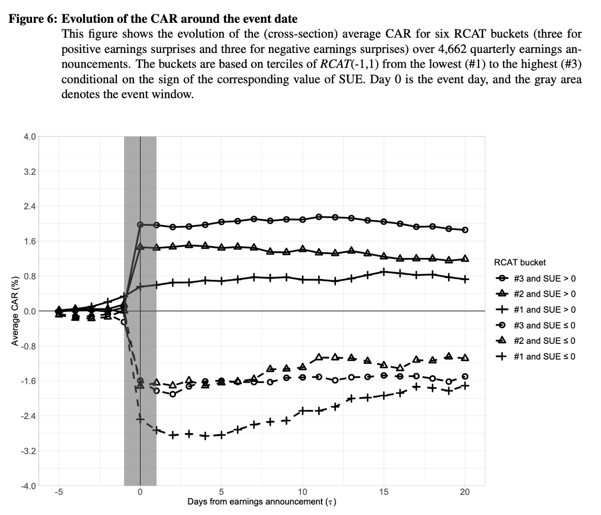

We show that media provide incremental information relative to the information contained in earnings press releases and earnings calls, and on aggregate, market participants overreact to it!
The complementary role of the news media stems from their transformation of earnings-related information into a more easily understandable, contextualized, and condensed format and the additional information it can provide given critical contemporary events.
We get to this result thanks to our methodological contribution of extending the event-study framework to analyze both cumulative abnormal return and tone. In addition, the use of structural topic modeling allows us to pinpoint the difference in content between corporate disclosures and media articles.
 Check out the paper!